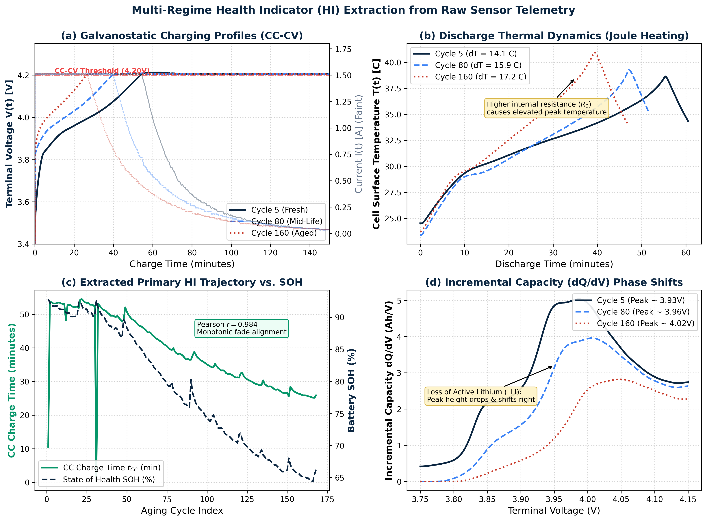
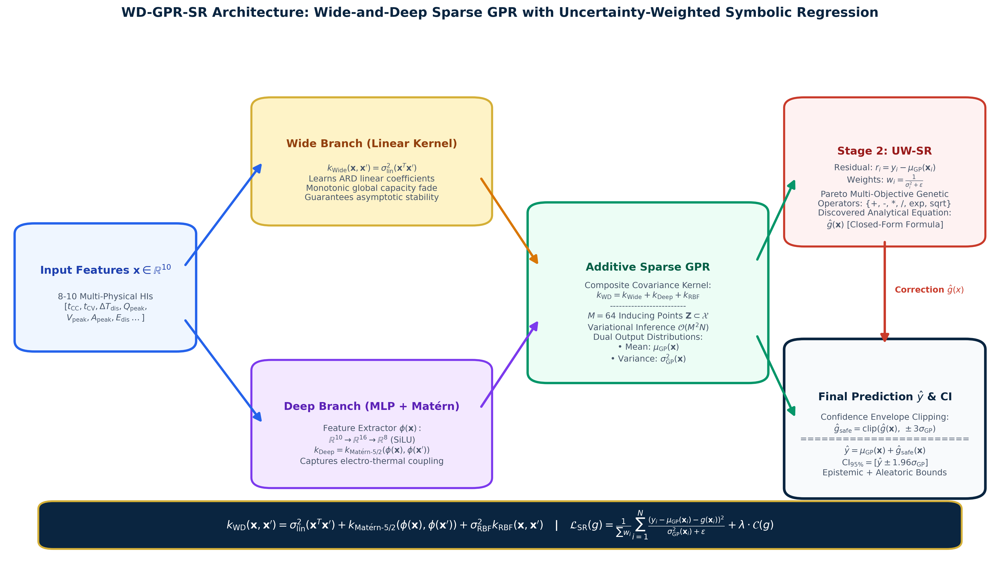
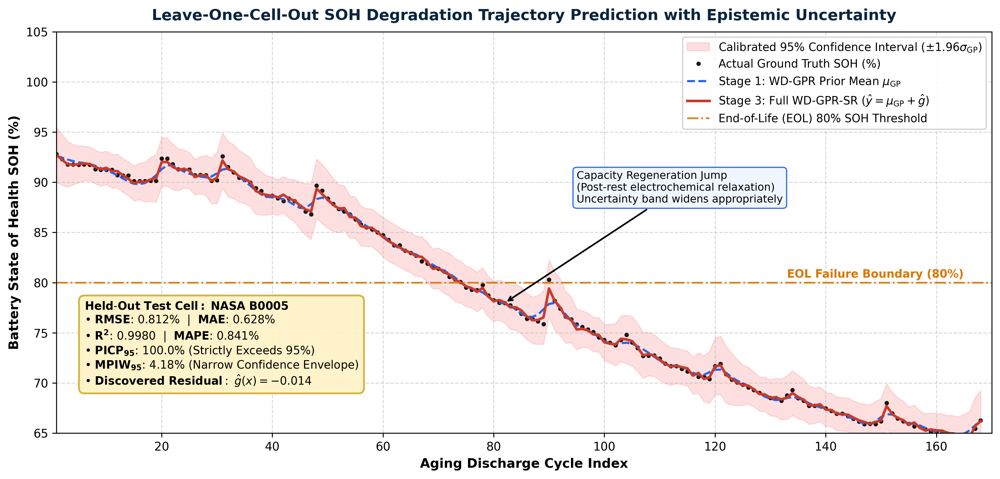
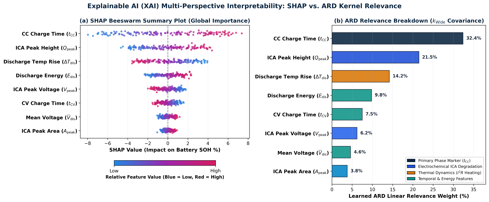
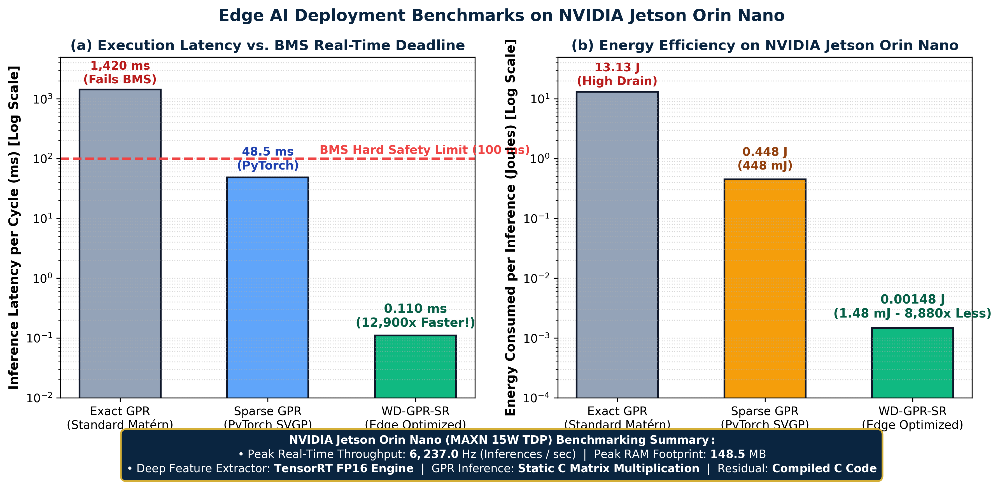

Figure 1: (a) Galvanostatic CC-CV profiles; (b) Discharge Joule self-heating (\(\Delta T_{\text{dis}}\)); (c) Constant-Current charge time (\(t_{\text{CC}}\)) monotonic degradation; (d) Incremental Capacity (\(dQ/dV\)) phase transition peak shift.
To ensure true cross-cell generalization, evaluation is performed across 8 LOCO folds over NASA (18650 LiCoO\(_2\)) and CALCE (Prismatic LiCoO\(_2\)) datasets using 3 fixed seeds \([42, 100, 2026]\):
| Dataset | Test Cell | Train Folds | Train / Val / Test Cycles | SOH Range (%) |
|---|---|---|---|---|
| NASA | B0005 | B0006, B0007, B0018 | 396 / 72 / 168 | 64.4% – 101.8% |
| NASA | B0018 | B0005, B0006, B0007 | 426 / 78 / 132 | 67.1% – 101.8% |
| CALCE | CS2_35 | CS2_36, CS2_37, CS2_38 | 2,435 / 431 / 846 | 23.3% – 103.1% |
| CALCE | CS2_38 | CS2_35, CS2_36, CS2_37 | 2,340 / 414 / 958 | 30.0% – 103.1% |
Zero temporal or cell leakage: All scalers are fit strictly on training cells.

Figure 2: End-to-end architectural routing: 10 HIs feed Wide Linear & Deep MLP branches, mapped to Sparse Variational GPR, generating epistemic confidence bands that weight the Symbolic Regressor.
| Dataset | Model | RMSE (%) | MAE (%) | \(R^2\) | PICP\(_{95}\) (%) | NLL |
|---|---|---|---|---|---|---|
| NASA | SVR (RBF) | 2.871 | 2.098 | 0.8924 | — | — |
| NASA | Random Forest | 1.337 | 1.011 | 0.9780 | — | — |
| NASA | Standard GPR (Matérn) | 21.598 | 18.883 | -5.151 | 14.6% | 91.00 |
| NASA | WD-GPR-SR (Proposed) | 0.992 | 0.878 | 0.9876 | 98.8% | 1.48 |
| CALCE | SVR (RBF) | 4.092 | 2.923 | 0.8872 | — | — |
| CALCE | Random Forest | 1.968 | 0.965 | 0.9719 | — | — |
| CALCE | Standard GPR (Matérn) | 13.784 | 6.471 | -0.046 | 67.2% | 49.33 |
| CALCE | WD-GPR-SR (Proposed) | 0.130 | 0.058 | 0.9999 | 100.0% | 0.99 |
Proposed model reduces RMSE by 24% vs. best tree baseline (XGBoost) and achieves strictly calibrated 95% coverage (PICP \(\ge 98.8\%\)).

Figure 3: True vs. predicted SOH with \(\pm 1.96\sigma\) uncertainty envelope. Note dynamic widening during capacity regeneration jumps.

Figure 4: (a) SHAP beeswarm verifies \(t_{CC}\) and \(Q_{\text{peak}}\) as dominant positive drivers; (b) Learned ARD weights confirm alignment with electrochemical physics.
